Table of Contents
Introduction
Ensuring beer is securely packaged for competitions and shipping is crucial to prevent breakage and maintain quality. This guide showcases 3–5 unique methods used by brewers, encouraging safe, cost-effective, and creative packaging practices.
1. Spirited Shippers
Materials Needed
- Spirited Shipper box
- Inserts for bottle/can protection
- Packing tape
Step-by-Step Process
- Securely place bottles/cans in the inserts
- Seal the package and apply labels properly
Pros & Cons
- ✅ Sturdy, reusable, designed for shipping
- ❌ Can be more expensive than DIY methods
Source
Caption: Using Spirited Shippers
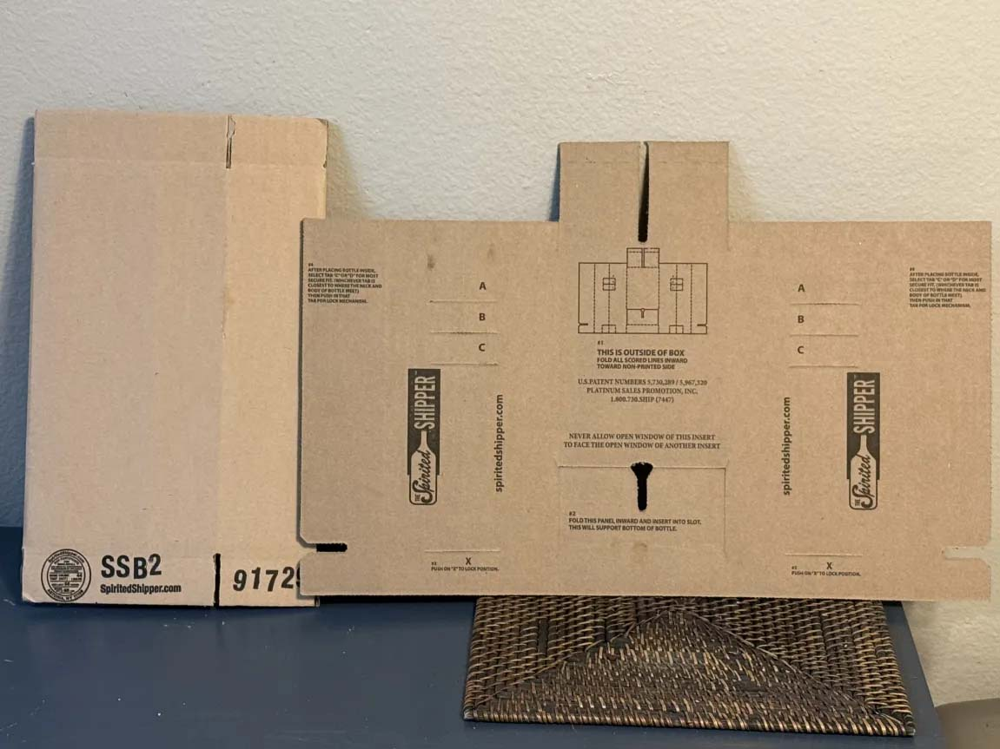Caption: Fold along the provided creases.

Caption: Continue to fold until the basic shape is ready for two bottles

Caption: Press in tabs at bottom
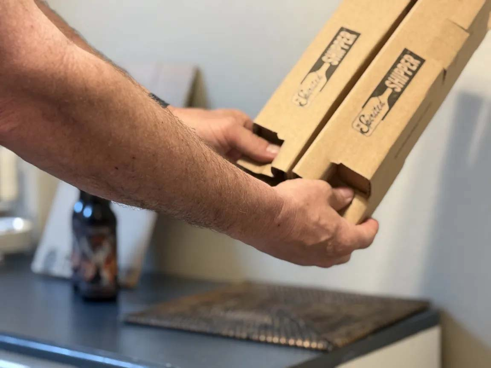Caption: Insert Bottles
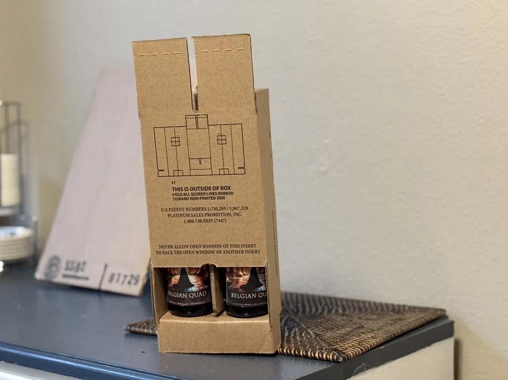Caption: Fold in top flaps
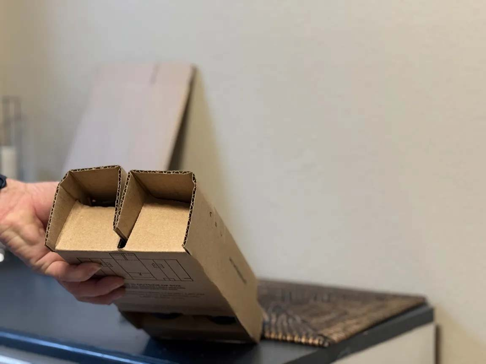Caption: Secure bottles in package with additional tabs.
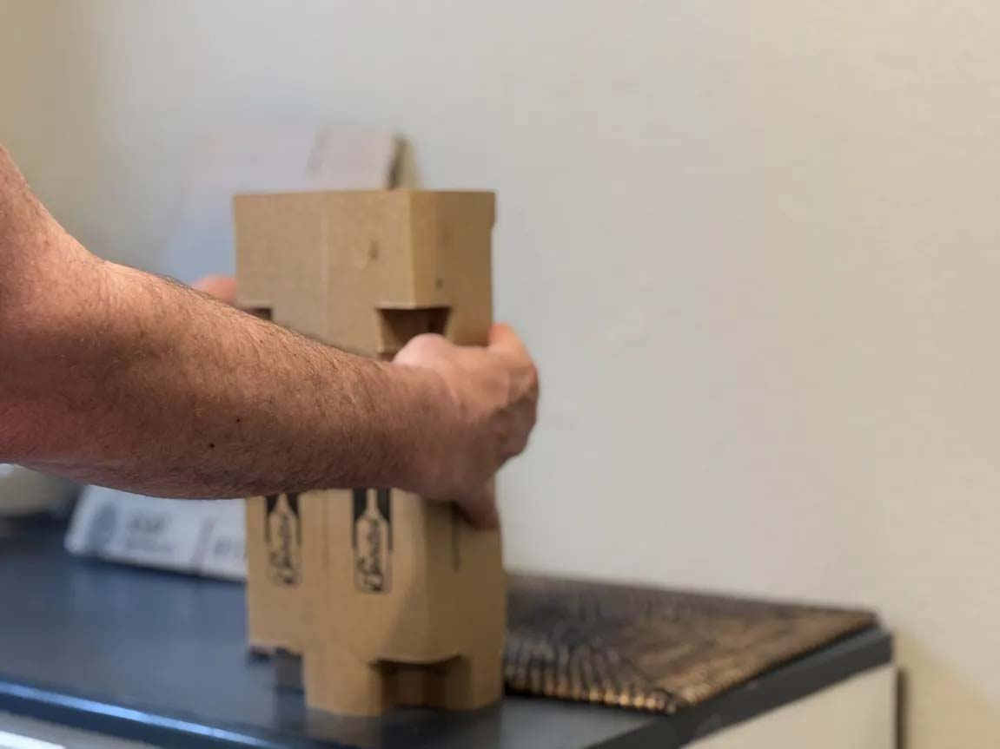Caption: Secure insert sleeve into outer packaging

2. Whale Pods
Materials Needed
- Whale Pod shipping container
- Additional padding (if necessary)
- Tape and labels
Step-by-Step Process
- Load bottles/cans securely into the container
- Seal and label the package properly
Pros & Cons
- ✅ Purpose-built, high level of protection
- ❌ Higher upfront cost
Source
Caption: Place foam insert at bottom of box
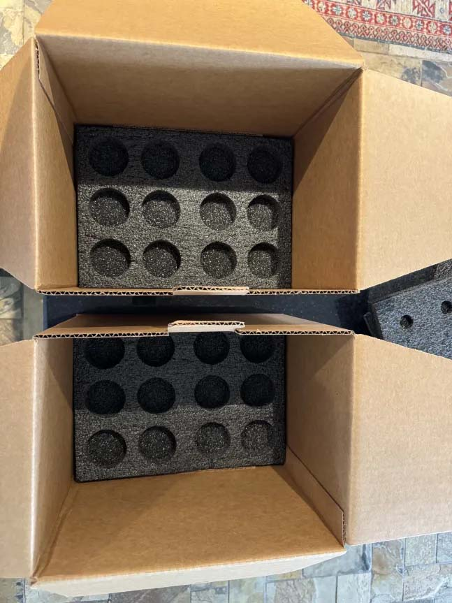Caption: Place bottles into foam inserts and add top foam inserts

Caption: Add top inserts on top of bottles

Caption: Close up box and it’s ready for your tape and label
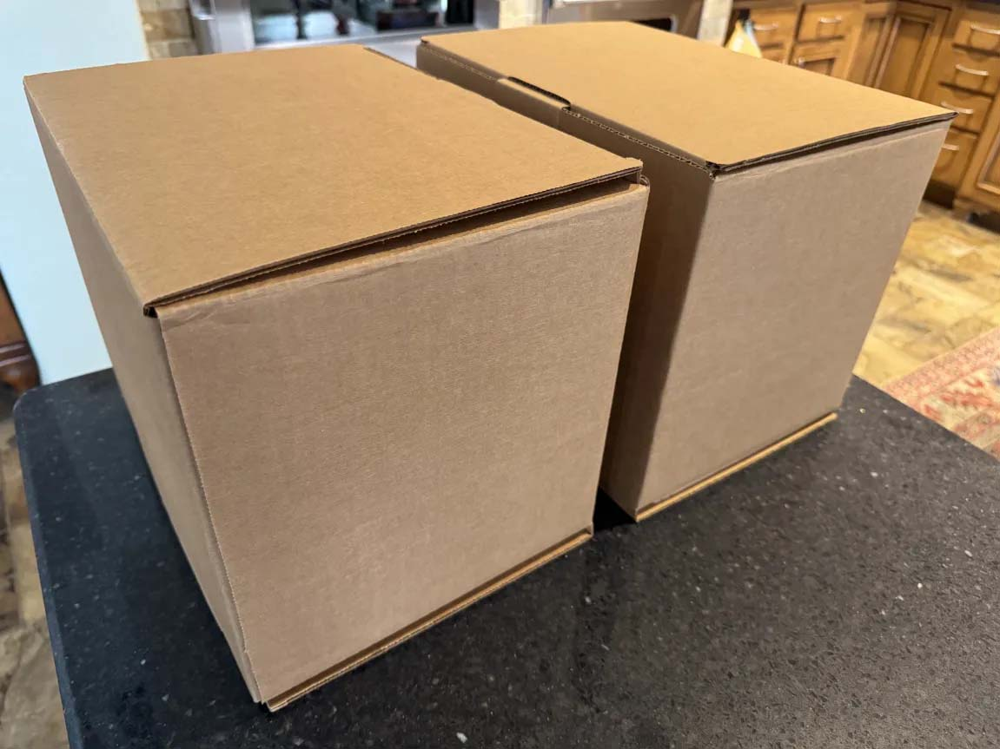3. Boxes and Bubble Wrap
Materials Needed
- Sturdy cardboard box
- Bubble wrap or foam padding
- Dividers (optional)
Step-by-Step Process
- Wrap bottles/cans individually
- Securely place them in the box
- Fill empty spaces to prevent movement
Pros & Cons
- ✅ Cost-effective, readily available materials
- ❌ Requires careful packing to avoid breakage
Source
- Free Supplies from UPS – Click Here
- Free Supplies from USPS – Click Here
- Free Priority Mail Flat Rate Padded Envelopes (As Bubble Wrap) – Click Here
- Bubble Wrap – Click Here
- Packaging Tape – Click Here
- Boxes available at various sources
Caption: Line box with trash bag to capture any wandering liquid

Caption: Wrap each bottle individually
Caption: After wrapping each bottle, secure them in Ziplock bags

Caption: Carefully place wrapped bottles into box

Caption: Ziplock bags are your friends
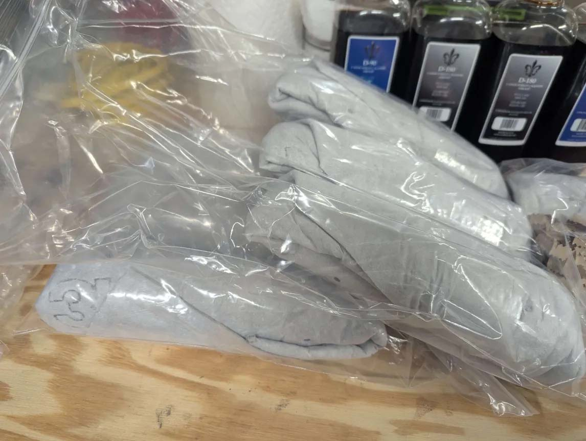Caption: Add additional material to ensure no movement in box
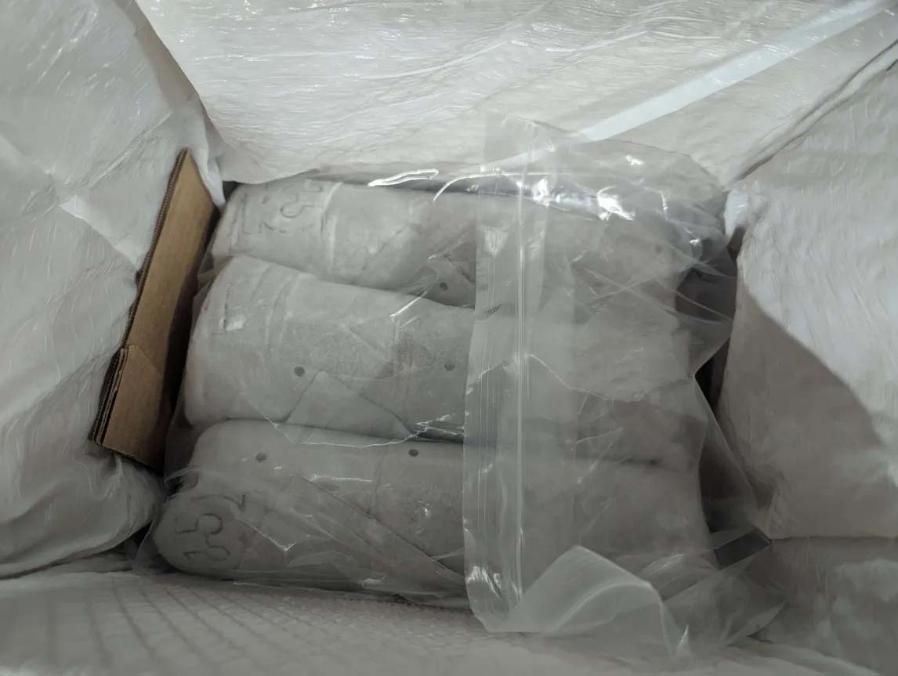Caption: Almost ready

Caption: Keep adding until it’s very tight
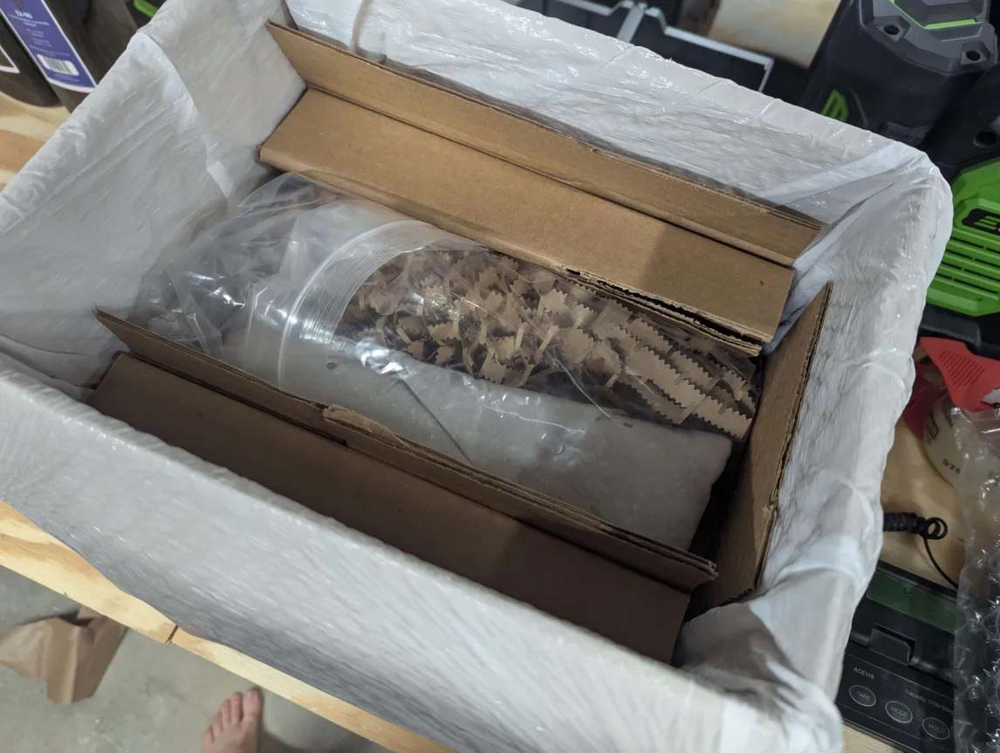Caption: And a little more
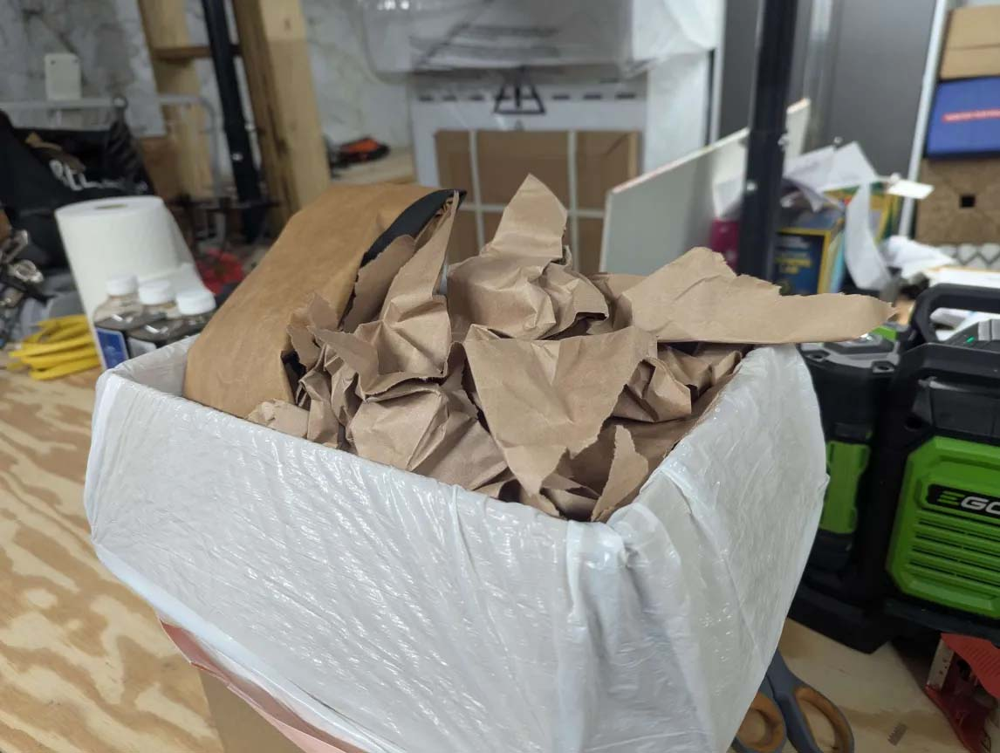4. Pringles Can Method
Materials Needed
- Pringles cans
- Padding material (foam, bubble wrap)
- Outer shipping box
Step-by-Step Process
- Prepare Pringles cans for safe transport
- Securely seal and label the package
Pros & Cons
- ✅ Creative, affordable, works well for smaller bottles
- ❌ Limited size compatibility
Source
Caption: Placeholder image for Pringles method
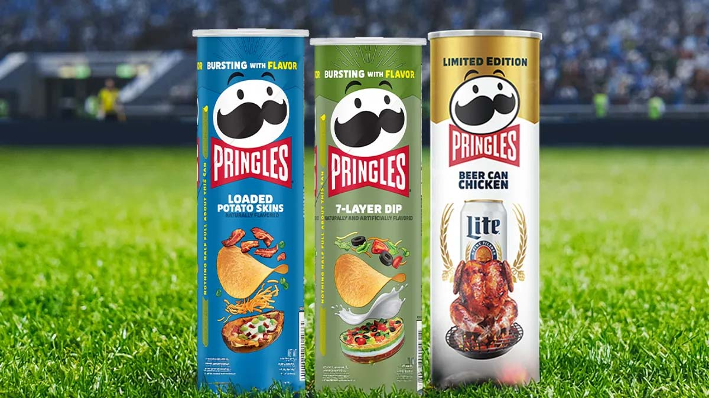